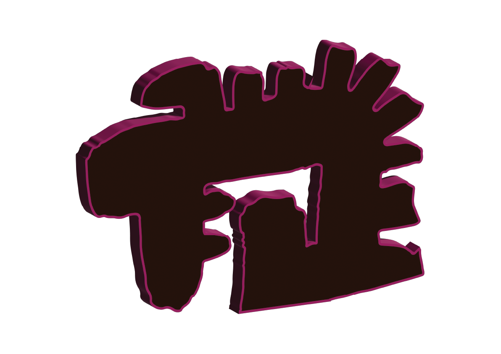
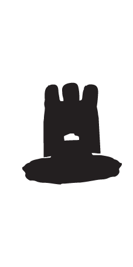

What have you experienced? (Select all that apply)
This is decolonial knowledge creation in practice.
Your responses contribute to research on Afro-Caribbean vernacular using Language As Technology.
Thank you for participating.
— Research conducted under Rhyan Jordan's Language As A Technology dissertation using Mavhunga's theory in "What Do Science, Technology, and Innovation Mean from Africa?" (2017)
PRESS ENTER TO RESTART THE GAME
10

"WOMAN"
"GRL"
"GURL"
"BIG GYAL"
PRESS ENTER TO CONTINUE
×
WHY?
WHY DID YOU CHOOSE THIS WORD?
"BECAUSE IT WAS COOL"
"BECAUSE I LOVE BLACK CULTURE"
"I SAID WHAT I SAID"
"I DON'T GIVE A SHIT"
YOU HAVE BEEN COMPROMISED!
HOW TO PLAY
SELECT THE WORDS YOU PERSONALLY WOULD USE TO DESCRIBE THE IMAGE DISPLAYED THEN PRESS "SUBMIT"
YOU HAVE 10 SECONDS TO MAKE YOUR CHOICE BEFORE TIME RUNS OUT!
PRESS "RESET" IF YOU CHANGE YOUR MIND BEFORE SUBMITTING
SELECT THE SYMBOL ON THE KEYBOARD

DOUBLE PRESS THE SYMBOL TO SELECT YOUR OPTION
HOW TO PLAY
SELECT A SYMBOL — THE PROVERB WILL STOP ON THE ONE DISPLAYED. THEN PRESS "SUBMIT"
YOU HAVE 15 SECONDS TO MAKE YOUR CHOICE BEFORE TIME RUNS OUT!
PRESS "RESET" TO CHANGE YOUR SYMBOL AND SEE A DIFFERENT PROVERB